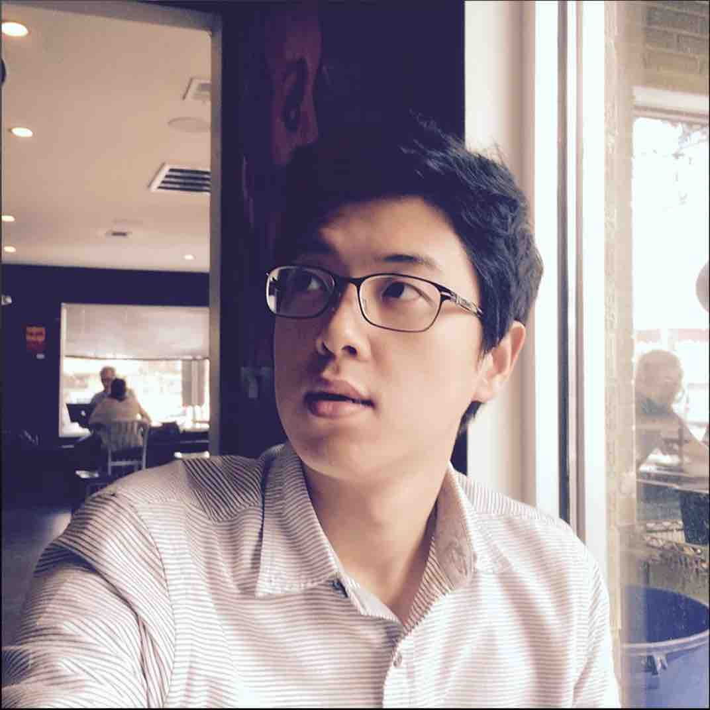

 I am a postdoctoral fellow at the Space Telescope Science Insitute (STScI). Before joining STScI, I was a JWST postdoc at NASA Goddard Space Flight Center (Astrophysics Science Division, Code 665).
I work on observational astronomy about galaxies in the early universe and reionization. My research focuses on Lyman-alpha emission properties both observationally and theoretically, advancing the use of Lyman-alpha as a probe of reionization and knowledge of the detailed process of reionization. I obtained my PhD in astronomy at the University of Texas at Austin with my doctoral thesis, “Constraining the End of Reionization with Lyα Spectroscopy.” In my thesis and following postdoctral studies, I have discovered new Lyman-alpha emitters at the highest redshifts, developed an innovative method to constrain the neutral hydrogen fraction in the intergalactic medium (IGM) from analyses of Lyman-alpha, and advanced our understanding of the timeline and topology of reionization.
I am originally from South Korea. I obtained my Bachelor's (astronomy & physics) and Master's (astronomy) degrees at Yonsei University in Seoul before joining the UT Austin astronomy program where I earned my PhD in August 2019. During my Master's program, I worked on building dark matter halo merger trees from cosmological N-body simulations and investigating large-scale environmental effects on galaxies using a semi-analytic model. [Read more about research...]